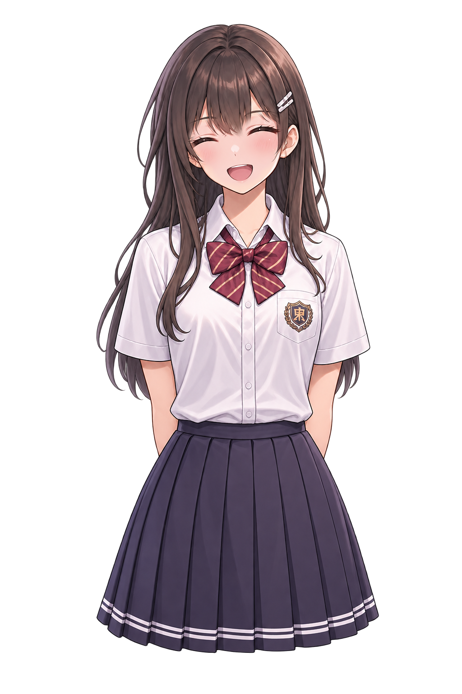
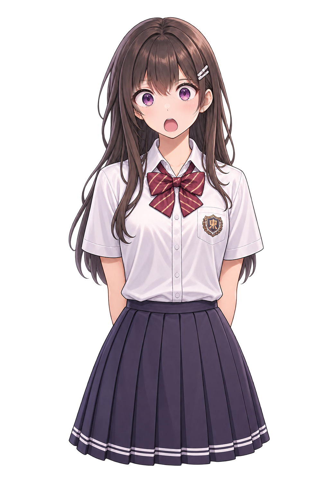
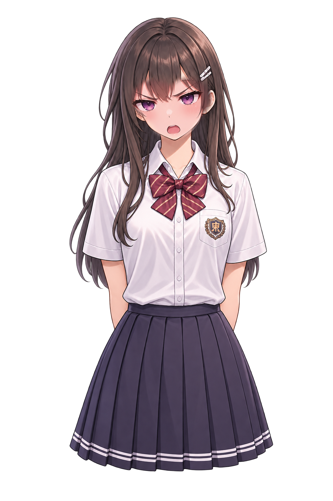

15-B-L2｜student-001 六表情切換比較
兩邊同步切換；左邊沿用已核准的完整人物 PNG，右邊是 L1 拆出的局部臉部替換。僅供開發比較，未接事件、存檔或正式人物映射。
A｜完整人物 PNG



原始方案：完整 PNG 交叉淡化 180 ms。
B｜固定身體＋臉部區域
新方案：只更新臉部 308×241 像素區域，其餘保持固定。
正在預載分層素材…
測試順序：六種表情依序切換 → 快速連點 → 小螢幕直式／電腦橫式。已通過 L1 原圖逐像素還原，不表示動畫觀感已驗收。沒有外部網路依賴。